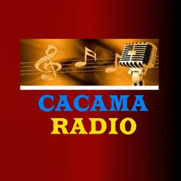
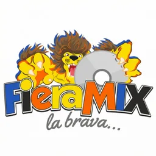

Hub · Ciudad
Radios en Higüey
9 emisoras en vivo en VivoRD
En el este turístico, Higüey concentra radios que sirven a residentes y a quienes trabajan en la industria de Punta Cana y Bávaro. El dial mezcla música bailable, espacios de fe, boletines locales y publicidad de comercios que mueven la economía regional. La voz higüeyana suena en guaguas que cruzan La Altagracia y en colmados de la ciudad catedralicia.
La influencia del turismo internacional se nota en repertorios variados: tropical dominicano, pop latino y estilos urbanos comparten horarios. Aun así, muchas emisoras mantienen raíces comunitarias claras, con locutores que anuncian actividades parroquiales, ligas barriales y campañas de servicio público.
Este hub reúne emisoras saludables registradas con Salvaleón de Higüey como ciudad. Los metadatos provienen de nuestro JSON de catálogo; no añadimos emisoras sin evidencia de stream.
Higüey cierra el arco este junto a La Romana y San Pedro. Si planeas escuchar desde el extranjero, combina esta página con guías sobre radio en línea y con hubs de género tropical o cristiano según tu preferencia.
La basílica y el comercio turístico marcan picos de audiencia en fechas religiosas y vacacionales; el listado aquí refleja emisoras que mantienen stream estable fuera de esos picos.
Emisoras

